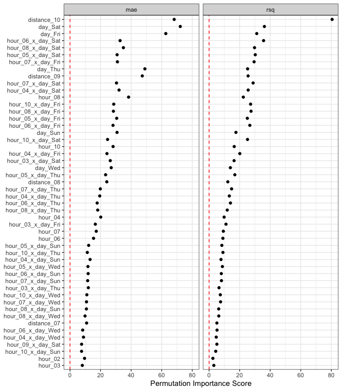

The important package has a succinct interface for obtaining estimates of predictor importance with tidymodels objects. A few of the main features:
- Any performance metrics from the yardstick package can be used.
- Importance can be calculated for either the original columns or at the level of any derived model terms created during feature engineering.
- The computations that loop across permutation iterations and predictors columns are easily parallelized.
- The results are returned in a tidy format.
Installation
You can install the development version of important from GitHub with:
install.packages("devtools")
# or
pak::pak("tidymodels/important")Do we really need another package that computes variable importances?
The main reason for making important is censored regression models. tidymodels released tools for fitting and qualifying models that have censored outcomes. This included some dynamic performance metrics that were evaluated at different time points. This was a substantial change for us, and it would have been even more challenging to add to other packages.
Example
Let’s look at an analysis that models food delivery times. The outcome is the time between an order being placed and the delivery (all data are complete - there is no censoring). We model this in terms of the order day/time, the distance to the restaurant, and which items are contained in the order. Exploratory data analysis shows several nonlinear trends in the data and some interactions between these trends.
We’ll load the tidymodels and important packages to get started.
The data are split into training, validation, and testing sets.
data(deliveries, package = "modeldata")
set.seed(991)
delivery_split <- initial_validation_split(deliveries, prop = c(0.6, 0.2), strata = time_to_delivery)
delivery_train <- training(delivery_split)The model uses a recipe with spline terms for the hour and distances. The nonlinear trend over the time of order changes on the day, so we added interactions between these two sets of terms. Finally, a simple linear regression model is used for estimation:
delivery_rec <-
recipe(time_to_delivery ~ ., data = delivery_train) |>
step_dummy(all_factor_predictors()) |>
step_zv(all_predictors()) |>
step_spline_natural(hour, distance, deg_free = 10) |>
step_interact(~ starts_with("hour_"):starts_with("day_"))
lm_wflow <- workflow(delivery_rec, linear_reg())
lm_fit <- fit(lm_wflow, delivery_train)First, let’s capture the effect of the individual model terms. These terms are from the derived features in the models, such as dummy variables, spline terms, interaction columns, etc.
set.seed(382)
lm_deriv_imp <-
importance_perm(
lm_fit,
data = delivery_train,
metrics = metric_set(mae, rsq),
times = 50,
type = "derived"
)
lm_deriv_imp
#> # A tibble: 226 × 6
#> .metric predictor n mean std_err importance
#> <chr> <chr> <int> <dbl> <dbl> <dbl>
#> 1 rsq distance_10 50 0.528 0.00655 80.5
#> 2 mae day_Sat 50 1.09 0.0150 72.2
#> 3 mae distance_10 50 2.20 0.0323 68.2
#> 4 mae day_Fri 50 0.877 0.0140 62.7
#> 5 mae day_Thu 50 0.638 0.0130 49.0
#> 6 mae distance_09 50 0.740 0.0156 47.3
#> 7 mae hour_08 50 0.520 0.0136 38.3
#> 8 rsq day_Sat 50 0.118 0.00327 36.2
#> 9 rsq hour_06_x_day_Sat 50 0.146 0.00410 35.7
#> 10 mae hour_08_x_day_Sat 50 0.604 0.0173 34.9
#> # ℹ 216 more rowsUsing mean absolute error as the metric of interest, the top 5 features are:
lm_deriv_imp |>
filter(.metric == "mae") |>
slice_max(importance, n = 5)
#> # A tibble: 5 × 6
#> .metric predictor n mean std_err importance
#> <chr> <chr> <int> <dbl> <dbl> <dbl>
#> 1 mae day_Sat 50 1.09 0.0150 72.2
#> 2 mae distance_10 50 2.20 0.0323 68.2
#> 3 mae day_Fri 50 0.877 0.0140 62.7
#> 4 mae day_Thu 50 0.638 0.0130 49.0
#> 5 mae distance_09 50 0.740 0.0156 47.3Two notes:
The importance scores are the ratio of the mean change in performance and the associated standard error. The mean value is always increasing with importance, no matter which direction is preferred for the specific metric(s).
We can run these in parallel by loading the future package and specifying a parallel backend using the
plan()function.
There is a plot method that can help visualize the results:
autoplot(lm_deriv_imp, top = 50)
Since there are spline terms and interactions for the hour column, we might not care about the importance of a term such as hour_06 (the sixth spline feature). In aggregate, we might want to know the effect of the original predictor columns. The type option is used for this purpose:
set.seed(382)
lm_orig_imp <-
importance_perm(
lm_fit,
data = delivery_train,
metrics = metric_set(mae, rsq),
times = 50,
type = "original"
)
# Top five:
lm_orig_imp |>
filter(.metric == "mae") |>
slice_max(importance, n = 5)
#> # A tibble: 5 × 6
#> .metric predictor n mean std_err importance
#> <chr> <chr> <int> <dbl> <dbl> <dbl>
#> 1 mae hour 50 4.10 0.0320 128.
#> 2 mae day 50 1.91 0.0214 89.1
#> 3 mae distance 50 1.46 0.0222 66.0
#> 4 mae item_24 50 0.0489 0.0119 4.11
#> 5 mae item_03 50 0.0337 0.0114 2.95
autoplot(lm_orig_imp)
Code of Conduct
Please note that the important project is released with a Contributor Code of Conduct. By contributing to this project, you agree to abide by its terms.